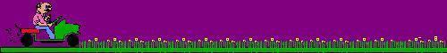
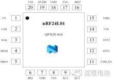
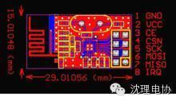

使用小程序

nRF24.L01是一款新型单片射频收发器件，工作于2.4 GHz～2.5 GHz ISM频段。内置频率合成器、功率放大器、晶体振荡器、调制器等功能模块，并融合了增强型ShockBurst技术，其中输出功率和通信频道可通过程序进行配置。nRF24L01功耗低，在以-6 dBm的功率发射时，工作电流也只有9 mA;接收时，工作电流只有12.3 mA，多种低功率工作模式（掉电模式和空闲模式）使节能设计更方便。
nRF24L01的封装及引脚排列如图1、2所示。各引脚功能如下：

CE：使能发射或接收;
CSN，SCK，MOSI，MISO：SPI引脚端，微处理器可通过此引脚配置nRF24L01：
IRQ：中断标志位;
VDD：电源输入端;
VSS：电源地：
XC2，XC1：晶体振荡器引脚;
VDD_PA：为功率放大器供电，输出为1.8 V;
ANT1,ANT2：天线接口;

工作原理
发射数据时，首先将nRF24L01配置为发射模式：接着把接收节点地址TX_ADDR和有效数据TX_PLD按照时序由SPI口写入nRF24L01缓存区，TX_PLD必须在CSN为低时连续写入，而TX_ADDR在发射时写入一次即可，然后CE置为高电平并保持至少10μs，延迟130μs后发射数据;若自动应答开启，那么nRF24L01在发射数据后立即进入接收模式，接收应答信号（自动应答接收地址应该与接收节点地址TX_ADDR一致）。如果收到应答，则认为此次通信成功，TX_DS置高，同时TX_PLD从TX FIFO中清除;若未收到应答，则自动重新发射该数据(自动重发已开启)，若重发次数(ARC)达到上限，MAX_RT置高，TX FIFO中数据保留以便再次重发;MAX_RT或TX_DS置高时，使IRQ变低，产生中断，通知MCU。最后发射成功时,若CE为低则nRF24L01进入空闲模式1;若发送堆栈中有数据且CE为高，则进入下一次发射;若发送堆栈中无数据且CE为高，则进入空闲模式2。
接收数据时,首先将nRF24L01配置为接收模式，接着延迟130μs进入接收状态等待数据的到来。当接收方检测到有效的地址和CRC时，就将数据包存储在RX FIFO中，同时中断标志位RX_DR置高，IRQ变低，产生中断，通知MCU去取数据。若此时自动应答开启，接收方则同时进入发射状态回传应答信号。最后接收成功时，若CE变低，则nRF24L01进入空闲模式1。